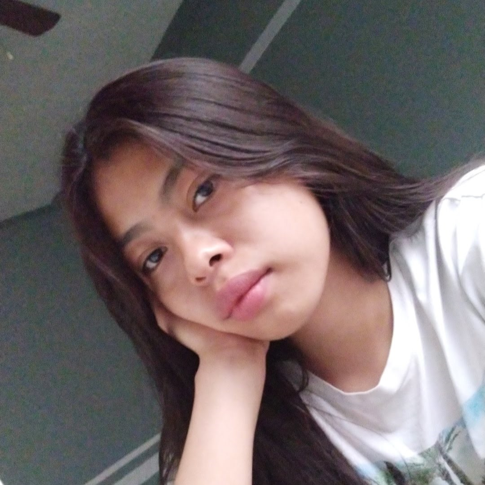

Mi nombre es Karen y tengo 21 años de edad y soy de la Sierra Norte de Puebla.

Actualmente curso el séptimo semestre de la licenciatura de Diseño Gráfico en la FABUAP. Realizo sesiones fotográficas como hobbie, en mis tiempos libres hago ejercicio, canto, dibujo y pinto en diferentes medios.
Tengo una hermana y un hermano, yo soy la hermana mayor y quiero a mi hermana de 4 años como si fuera mi hija. Actualmente mi hermano no vive con la familia pero viene de visita en vacaciones y todos disfrutamos esas fechas. En casa tenemos un perro llamado Drago y un gato llamado pecas, ninguno se lleva bien con el otro pero intentan respetarse.